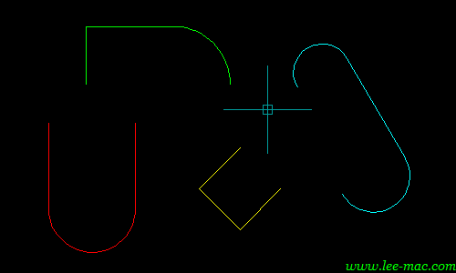
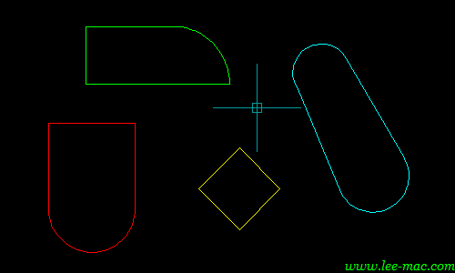

Polyline Programs
This page is delivered for consistency purposes only, as part of the LeeMac sample module of DynALisp, which shows how DynALisp turns existing AutoLISP programs into a module. The program and its description are the work of Lee Mac, who keeps all the credit for them. The original page, with the latest version, is on Lee Mac's website: https://lee-mac.com/polylineprograms.html
| Function Syntax | LM-PolylineTools – original syntax: PJ / PC / PW (see aliases) |
| Current Version | 1.0 |
| Compatible with AutoCAD for Mac? | No |
| Compatible with AutoCAD LT? | Yes |
| Original Page | lee-mac.com/polylineprograms.html |
Here I offer a selection of short, useful programs for manipulating polylines in AutoCAD.
The program available for download above defines three custom commands which enable the user to manipulate a set of selected polylines in various ways.
Each command is described in more detail below, with an accompanying animation to demonstrate the program.
Contents
Polyline Join
This program is effectively a wrapper for the standard AutoCAD PEDIT command, allowing the user to join multiple sets of lines, arcs & polylines without needing to traverse the various prompts issued by the standard command.
Upon issuing the command syntax PJ at the AutoCAD command-line, the program will prompt the user for a selection of lines, arcs and/or polylines; following any necessary conversion to polylines, the program will attempt to join the selected objects to form continuous polylines.
The progam is configured to use the JOIN option of the PEDIT command with a zero fuzz distance, however, this may be easily altered if necessary.
Demonstration

Polyline Close
Upon issuing the command syntax PC at the AutoCAD command-line, this simple program will prompt the user for a selection of open polylines and will proceed to close all polylines in the selection.
Demonstration
Polyline Width
Upon issuing the command syntax PW at the AutoCAD command-line, this program will first prompt the user for a selection of polylines, followed by a width to be applied to all segments of each polyline in the selection.
At this prompt, a default zero-width value is offered.
Demonstration

Bundled program notes
;; Polyline Close - Lee Mac ;; Closes all polylines in a selection. ;; Polyline Join - Lee Mac ;; Attempts to join all lines, arcs and polylines in a selection. ;; Polyline Width - Lee Mac ;; Applies a given constant width to all segments in a selection of polylines.
Command Names And Aliases
As in every DynALisp module, each program of this sample module has one main command, named LM-*, and the original command names of Lee Mac's page are kept as its aliases: they run the same command, and can be added, renamed or removed in Dyl-Suite (saved in Resources\Aliases.csv). The rows marked ↳ are child commands of LM-PolylineTools: they are run by their alias, or picked from LM-PolylineTools when it lists them (their command is named Pst-*).
| Command | Aliases | Name |
|---|---|---|
| LM-PolylineTools | – | Polyline Tools |
| ↳ PC | – | Polyline Close |
| ↳ PJ | – | Polyline Join |
| ↳ PW | – | Polyline Width |